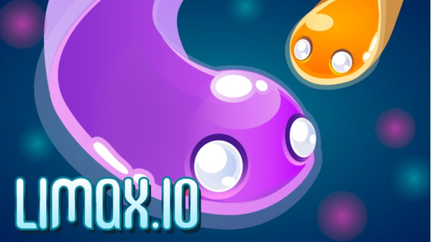
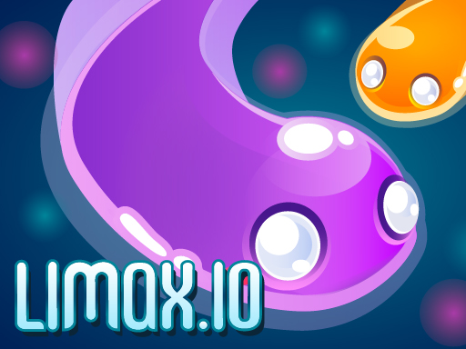

Introduction
Limax.io is a multiplayer arena game where players control glowing neon worm‑like snakes in a constantly moving battlefield. Unlike traditional io games that focus on pure size, Limax.io blends fast‑paced movement, a mass‑consuming boost mechanic, and tactical map awareness into a skill‑based competition. Each worm leaves a luminous trail that can be weaponized to eliminate rivals, making every encounter a chess‑like duel in a sea of light. The game’s vibrant neon aesthetic, smooth controls, and competitive leaderboard keep players coming back for “just one more round.” The blend of offense (boost trails) and defense (evasion, mass preservation) creates a unique strategic depth that rewards both quick reflexes and thoughtful positioning.
Getting Started

Getting started in Limax.io is straightforward. Open the game in your browser (https://limax.io) and you’ll be placed in a colorful arena with other players. Use your mouse to steer your worm: the cursor determines direction, while the worm’s head follows smoothly. Press Space or the left mouse button to activate Boost. Boost consumes a portion of your current mass, so watch your mass bar before you boost. The primary objective is to collect glowing food orbs scattered across the map; each orb adds a small amount of mass and increases your length. As you grow, you can wrap around the arena edges, but colliding with another worm’s head ends the game. The UI shows your current score, mass, and the top five leaderboard positions. Start by practicing basic movement, then experiment with short boosts to clear low‑mass opponents. Remember to avoid the red “death zones” that appear near the map edges; they shrink the playable area over time, forcing players into tighter confrontations. Once you’re comfortable with steering and boost timing, you’re ready to hunt and climb the leaderboard.
Basic Tips
Basic Tips for New Players 1. **Prioritize Food Orbs Early** – In the first 30 seconds, collect the bright cyan orbs near your start. Each orb adds 5–10 mass, giving you a solid base to survive early boosts. 2. **Use Boost Sparingly** – Boost consumes about 5% of your mass and leaves a lethal trail. Save boost for two situations: escaping a larger worm that’s closing in, or cutting off a small opponent’s escape route. 3. **Watch the Map Borders** – The arena’s red danger zone shrinks every 30 seconds. Staying too close to the edge can trap you against the border, making you an easy target for boost‑trail attacks. 4. **Don’t Chase the Leader Immediately** – When you see the top player, resist the urge to chase them head‑on. Instead, target players slightly above your score; taking them out grants a large mass bonus without risking a direct fight with the dominant worm. 5. **Practice Smooth Steering** – Because your worm follows the cursor, abrupt turns swing your tail widely. Practice gentle curves to keep your tail near your head, reducing the chance of self‑collision when you boost.
Advanced Strategies

Advanced Strategies for Experienced Players 1. **Boost‑Trail Cutting** – Use a short boost to place a thin luminous trail in a narrow corridor. When a chasing opponent follows, they collide with the trail. Boost at a 90‑degree angle to your path, creating a wall the enemy cannot avoid without losing momentum. 2. **Map‑Control via Shrinking Zones** – As the red danger zone contracts, stay near the safe interior edge of the shrinking circle. This forces opponents into the danger zone (taking damage) or toward you, where you can pin them with boost‑trails. 3. **Mass‑Management Cycling** – Keep about 10% of your total mass unused. For a quick escape, spend this reserve in rapid micro‑boosts, each under a second, without leaving a long trail. This preserves size for later attacks. 4. **Strategic Fake‑Outs** – Feint toward a high‑value target, then suddenly reverse direction, letting your tail swing behind you. If the opponent commits to a boost‑trail chase, they collide with the exposed tail. Time the fake‑out when they begin their boost for the highest counter‑kill chance.
Pro Tips

Pro Tips to Separate Good from Great 1. **Predict Opponent Boost Timing** – Watch the red zone’s pulse; many players boost in rhythm with it. Anticipate their boost and place a counter‑trail where they will appear. 2. **Camera Scrolling** – The camera follows your head, but you can scroll slightly with the mouse. Scroll ahead to spot hidden food clusters or threats before they appear on screen. 3. **Controlled Mass Dumps** – When fleeing, release small mass amounts opposite your direction. This creates a “mass shield” that blocks enemy boost‑trails while preserving most of your size. 4. **Tail‑Length Stretch** – During a boost, execute a sharp 180‑degree turn to stretch your tail outward, forming a wider barrier. Use this in narrow corridors to dominate space without endangering your head.
Conclusion
Conclusion Limax.io delivers a neon‑lit arena where reflexes, boost‑trail tactics, and map awareness combine for endless competition. Master the basics—collect orbs, steer smoothly, and boost wisely—then layer in advanced maneuvers like trail cutting and mass cycling. Keep an eye on the shrinking danger zone, target players just above your score, and practice patience. Dive in at https://limax.io, apply these tips, and climb the leaderboard to become the top neon worm.